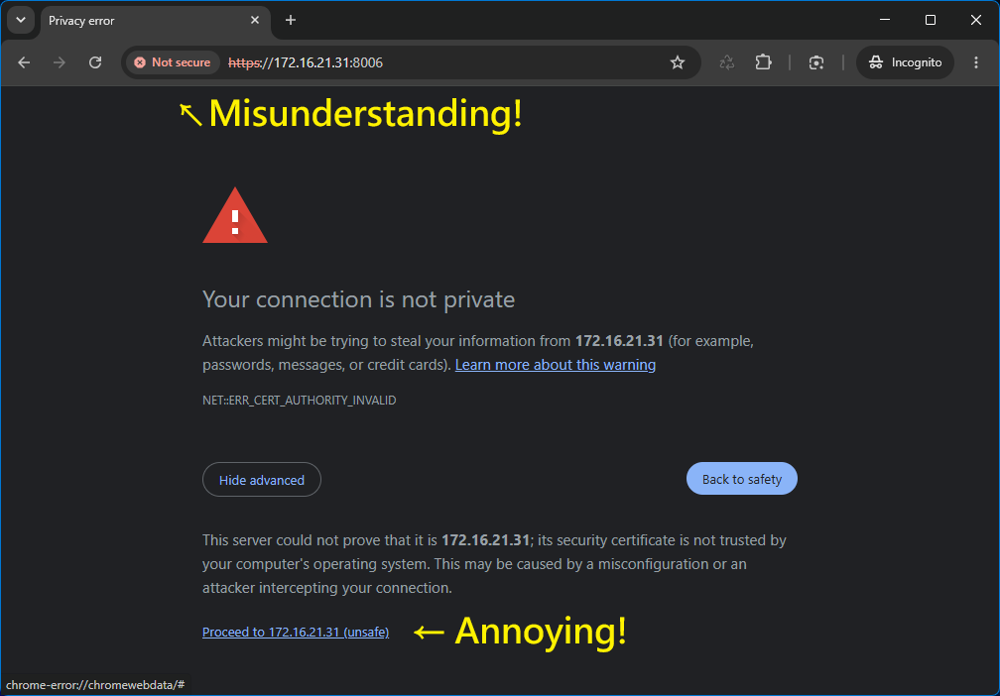
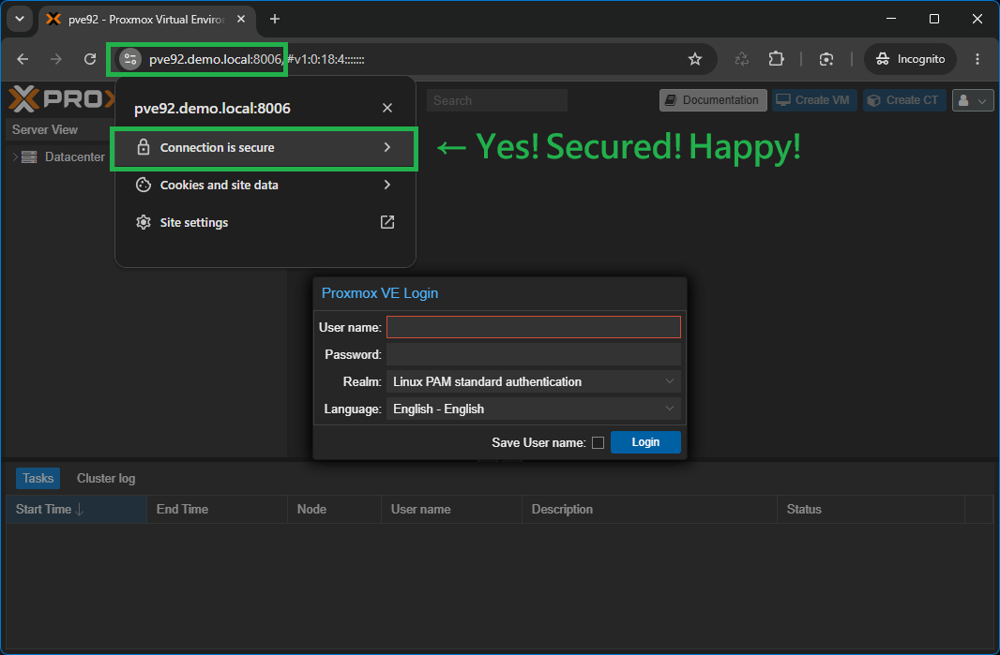

伺服器一個指令，每台用戶端一個指令 — 瀏覽器顯示綠色鎖頭，十年免重設，完全離線可用。
點擊下方任意截圖可放大 150% 詳細預覽網頁效果


不需要每 90 天重跑憑證、不需公開網域，完全適應隔離網路。
自動產生 10 年專屬 Root CA 與 825 天伺服器憑證，具備現代標準 CA:true 規範，確保 Chrome / Firefox 永不跳警告。
自動寫入 `/etc/pve/local/pveproxy-ssl.pem` 與 `pveproxy-ssl.key` 並重載服務，節點憑證即刻生效。
自動將實體 LAN IP、Tailscale / VPN IP 及 FQDN 包含於憑證 SAN 中，即使直接輸入 IP 連線也不會跳警告。
提供 Windows (.bat)、Linux (.sh) 與 macOS (.sh) 客戶端腳本，無痛寫入系統與 Chrome / Firefox 信任庫。
不需開放 Port 80/443、不需 Cloudflare DNS API，完全不需連網，完美適應企業與私有 Homelab 離線環境。
伺服器與用戶端均支援 `-u` 參數，可秒級恢復 PVE 原始備份憑證並乾淨清除系統 hosts 殘留。
pve-cert 如何在不連外網的情況下建立完全受信的 Proxmox VE HTTPS 傳輸通道
第一步在 Proxmox VE 伺服器，第二步在用戶端電腦。
下載並執行 pve-cert.sh。腳本會全自動產生 Root CA 並套用至 pveproxy。
wget https://raw.githubusercontent.com/anomixer/pve-cert/main/pve-cert.sh && bash pve-cert.sh
自動自 PVE 伺服器 IP 拉取 Root CA 憑證，完成系統信任庫與 hosts 配置。
pve-cert-windows.bat -s 192.168.1.100
sudo bash pve-cert-linux.sh -s 192.168.1.100
sudo bash pve-cert-macos.sh -s 192.168.1.100
了解為何 pve-cert 是內部網路與 Homelab 最簡單強健的預防瀏覽器警告方案
| 功能 / 評比項目 | pve-cert (本腳本) | PVE 預設自簽 | ACME (HTTP-01) | Cloudflare (DNS-01) |
|---|---|---|---|---|
| 綠色受信任鎖頭 | YES (完成用戶端) | NO (提示警告) | YES | YES |
| 需公開網域 | NO (完全不需要) | NO | YES | YES |
| 需網際網路連線 | NO (100% 離線) | NO | YES (Port 80) | YES (DNS API) |
| 憑證有效期 | 10 年 Root CA | 1 年 (須重做) | 90 天 (自動更新) | 90 天 (自動更新) |
| 直接 IP 連線受信任 | YES (SAN 包含 IP) | NO | NO | NO |
| 主機名曝露於 CT 日誌 | NO (安全隱密) | NO | YES | YES |
解答關於 Proxmox VE 憑證與用戶端信任的常見疑問